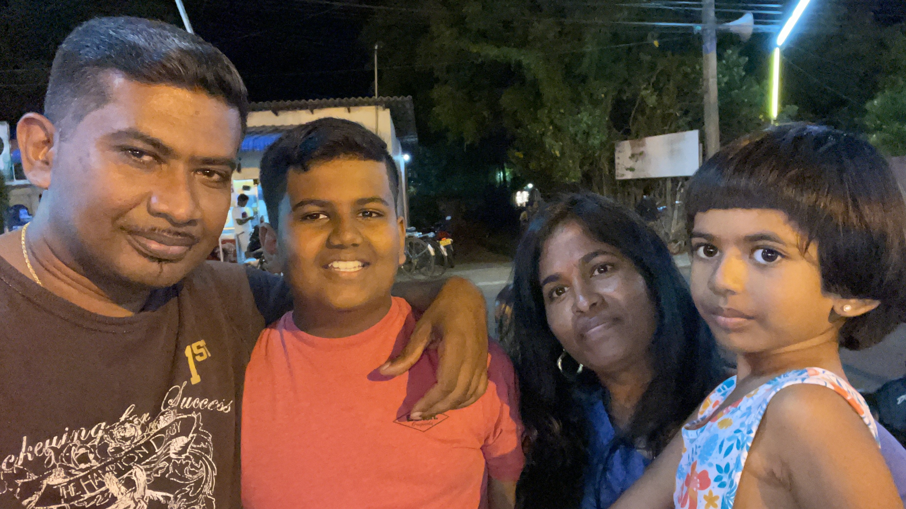

Hi, my name is Krish. I have made this
website personally about me. Please scroll down for
information about me.
I have added 4 topics
about me. You can click on one of the menu sections on the
top left corner or scroll down.
My full name is Krish Indrasenan. I am 11 years old
which means I am in 6th grade. I am 5 foot 5 inches tall.
My birthday is on September 24. Some brief information about the
upcoming topics are that I love to play sports and try to keep
track with the sports news,
I go to a school named Mary Shadd,
and I have 4 members in my family (including me).
Scroll down to know about my family.
As you know, I have 4 members in my family.
My family members are
my mom named Tharshinie, my dad
named Indrasenan, and my little sister named Isha.
My dad works for a company named Bell Technical Solutions
(BTS) Canada. My mom works for a company named CI Financial.
My little sister goes to the same school as me.
Scroll down to know about my school.

As you have already figured out by reading the other
paragraphs, my sister and I go to a school named Mary Shadd
Public School.
It is a school in Toronto, Canada.
Mary Shadd is a school over 35 years old! Mary Shadd Public
School got its name by a person named Mary Ann Shadd who
helped
african slaves to come to Canada across the American
border using the Underground Railroad. That's why the school's
logo has a train to represent the Underground Railroad even though
there is no train. They have many banners won by student who
competed competitively. Scroll down to learn about my hobbies.
My hobbies are playing sports. My favourite
sports are Basketball, Soccer, and now Flag
Football too. As you heard in the last paragraph,
there are competitive team tryouts for sports at
my school. I went to all 3 tryouts for Flag Football
because it seemed fun and, I made the team!
Plus, my coach put me as the quarterback position because
he wanted me to take the leading position and I was
so excited.
The tournament is on a school day and
my coach told my team that we would be skipping
the whole day of school.
Everyday we will be practicing
to attempt to be the city champions.
I am nervous because
I will be representing the school. I believe I am ready though.